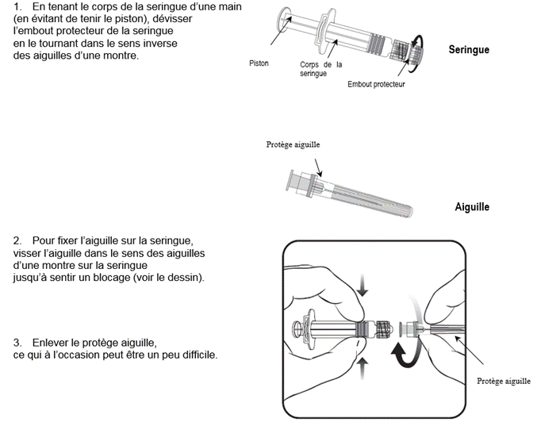

RÉSUMÉ DES CARACTÉRISTIQUES DU PRODUIT
ANSM - Mis à jour le : 01/12/2014
VARILRIX, poudre et solvant pour solution injectable
Vaccin varicelleux vivant
2. COMPOSITION QUALITATIVE ET QUANTITATIVE
Après reconstitution, une dose (0,5 ml) contient :
Virus de la varicelle* souche OKA (vivant atténué)…………………………au minimum 103.3 UFP**
* Produit sur cellules diploïdes humaines (MRC-5).
** UFP = unité formant plages.
Ce vaccin contient des traces de néomycine. Voir rubrique 4.3
Pour la liste complète des excipients, voir rubrique 6.1.
Poudre et solvant pour solution injectable.
Poudre de couleur légèrement crème à légèrement jaune ou rosé.
4.1. Indications thérapeutiques
VARILRIX est indiqué chez les sujets à partir de 12 mois pour la prévention de la varicelle.
VARILRIX peut aussi être administré aux sujets « réceptifs » exposés à la varicelle. Une vaccination dans les 3 jours suivant l’exposition à un patient avec éruption peut réduire le risque de complications liées à la varicelle.
VARILRIX doit être utilisé selon les recommandations officielles applicables.
4.2. Posologie et mode d'administration
Les sujets à partir de 12 mois doivent recevoir deux doses de VARILRIX pour une protection optimale contre la varicelle (voir rubrique 5.1). Il est préférable d’administrer la seconde dose au moins 6 semaines après la première dose mais en aucun cas avant 4 semaines.
Interchangeabilité
Une dose unique de VARILRIX peut être administrée chez les sujets ayant reçu une première dose d’un autre vaccin varicelleux. De même, une dose de VARILRIX peut être complétée par l’administration d’une dose d’un autre vaccin varicelleux.
Mode d’administration
Le vaccin doit être injecté par voie sous-cutanée, de préférence dans la région deltoïdienne.
Pour toute information sur les instructions pour la reconstitution du vaccin (voir rubrique 6.6).
· Déficit sévère de l'immunité humorale ou cellulaire (primaire ou acquis), par exemple déficit immunitaire combiné sévère, agammaglobulinémie et SIDA, ou infection symptomatique due au VIH ou avec un taux âge-dépendant de lymphocytes T CD4+ chez les enfants de moins de 12 mois : CD4 + < 25%; enfants de 12 à 35 mois : CD4 + < 20%; enfants de 36 à 59 mois : CD4 + < 15% (voir rubrique 4.4).
· Grossesse. De plus, une grossesse doit être évitée dans le mois suivant la vaccination (voir rubriques 4.4 et 4.6).
Comme pour les autres vaccins, l’administration de VARILRIX doit être différée chez les sujets atteints d’infections fébriles sévères aiguës. La présence d’une infection bénigne n’est pas une contre-indication.
4.4. Mises en garde spéciales et précautions d'emploi
Comme pour tous les vaccins injectables, dans la mesure où de rares cas de réactions anaphylactiques peuvent survenir, il est recommandé de disposer d’un traitement médical approprié et d’effectuer une surveillance.
Une syncope (évanouissement) peut survenir après toute vaccination, voire même avant, en particulier chez les adolescents, comme réaction psychogène à l’injection avec une aiguille. Ceci peut s’accompagner de plusieurs signes neurologiques comme un trouble transitoire de la vision, des paresthésies et des mouvements tonico-cloniques des membres durant la phase de récupération. Il est important que des mesures soient mises en place afin d’éviter des blessures en cas d’évanouissement.
Les personnes vaccinées doivent éviter l’utilisation de salicylés dans les 6 semaines suivant la vaccination (voir rubrique 4.5).
Patients immunodéprimés
La vaccination peut être envisagée chez les patients présentant certains déficits immunitaires chez qui les bénéfices attendus sont supérieurs aux risques (par exemple sujets infectés par le VIH asymptomatiques, déficits en sous-classe d'IgG, neutropénie congénitale, maladie granulomateuse chronique, déficits en complément).
Les patients immunodéprimés ne présentant pas de contre-indication à cette vaccination (voir rubrique 4.3) peuvent ne pas répondre aussi bien que les sujets immunocompétents, par conséquent, certains de ces patients peuvent contracter la varicelle en cas de contact, malgré l'administration appropriée du vaccin. Ces patients doivent être attentivement surveillés, afin de détecter tout signe de varicelle.
Comme avec d’autres vaccins varicelleux, des cas de varicelle peuvent survenir chez des sujets antérieurement vaccinés par VARILRIX. Ces varicelles sont habituellement peu sévères, avec un nombre plus faible de lésions et une fièvre et une toux moins importantes comparées à celles observées chez les sujets non vaccinés.
Très rarement, la transmission du virus vaccinal OKA peut survenir dans l’entourage non immunisé du sujet vacciné. Cependant, cette transmission n’a pas été confirmée chez le sujet vacciné en l’absence de lésions cutanées varicelliformes. Ces éruptions dans l’entourage non immunisé sont très légères, et montrent que le virus reste atténué après passage par des hôtes humains.
VARILRIX ne doit pas être administré par voie intradermique.
VARILRIX ne doit jamais être administré par voie intravasculaire.
4.5. Interactions avec d'autres médicaments et autres formes d'interactions
La prise de salicylés doit être évitée dans les 6 semaines suivant la vaccination par VARILRIX, un syndrome de Reye ayant été rapporté suite à la prise de salicylés lors d’une varicelle naturelle.
VARILRIX peut être administré en même temps que d’autres vaccins, si les sites d’injection sont différents.
Si le vaccin combiné rougeole-oreillon et/ou rubéole n’est pas administré en même temps que VARILRIX, un intervalle d’au moins un mois doit être respecté entre les deux injections.
Les femmes enceintes ne doivent pas être vaccinées avec VARILRIX.
Toutefois, aucun effet délétère sur le fœtus n'a été documenté après l'administration chez la femme enceinte de vaccins contre la varicelle.
Toute grossesse doit être évitée dans le mois suivant la vaccination. Il convient de conseiller aux femmes ayant l’intention de débuter une grossesse de différer leur projet.
En raison du risque théorique de transmission de la souche virale du vaccin de la mère à l’enfant, VARILRIX n’est généralement pas recommandé pour les femmes qui allaitent (voir aussi rubrique 4.4). La vaccination des femmes exposées n’ayant pas d’antécédent de varicelle ou connues pour être séronégatives devra être évaluée au cas par cas.
4.7. Effets sur l'aptitude à conduire des véhicules et à utiliser des machines
Les effets indésirables rapportés lors des essais cliniques sont listés à la fréquence définie comme:
Très fréquent (≥ 1/10),
Fréquent (de ≥ 1/100 à < 1/10),
Peu fréquent (de ≥ 1/1000 à < 1/100),
Rare (de ≥ 1/10000 à < 1/1000),
Très rare (< 1/10000).
· Données issues des essais cliniques :
Le profil de tolérance présenté ci-dessous est basé sur un total de 5369 doses de VARILRIX administrées seules à des enfants, adolescents et adultes.
Infections et infestations :
Peu fréquents : infection des voies respiratoires supérieures, pharyngite.
Affections hématologiques et du système lymphatique :
Peu fréquent : lymphadénopathie.
Affections psychiatriques :
Peu fréquent : irritabilité.
Affections du système nerveux :
Peu fréquents : céphalées, somnolence.
Affections oculaires :
Rare : conjonctivite.
Affections respiratoires, thoraciques et médiastinales :
Peu fréquents : toux, rhinite.
Affections gastro-intestinales :
Peu fréquents : nausées, vomissements.
Rares : douleur abdominale, diarrhée.
Affections de la peau et du tissu sous-cutané :
Fréquent : éruption cutanée.
Peu fréquents : éruption de type varicelle, prurit.
Rare : urticaire.
Affections musculo-squelettiques et systémiques :
Peu fréquents : arthralgie, myalgie.
Troubles généraux et anomalies au site d’administration :
Très fréquents : douleur et rougeur.
Fréquents : gonflement au site d’injection*, fièvre (température orale/axillaire ≥ 37,5° C ou température rectale ≥ 38,0° C)*.
Peu fréquents : fièvre (température orale/axillaire > 39,0° C température rectale > 39,5° C), fatigue, malaise.
Une tendance à une incidence plus élevée de la douleur, de la rougeur et du gonflement a été observée à la seconde dose comparée à la première dose.
*Un gonflement au site d’injection accompagné de fièvre a été très fréquemment rapporté lors d’essais cliniques chez les adolescents et les adultes. Le gonflement a aussi été rapporté très fréquemment après la deuxième dose chez les enfants de moins de 13 ans.
Aucune différence de tolérance n'a été observée entre les sujets initialement séropositifs et les sujets initialement séronégatifs.
· Données de surveillance post-commercialisation :
Concernant les événements indésirables suivants, identifiés lors de la surveillance post-commercialisation, la fréquence n’a pas pu être déterminée précisément.
Infections et infestations :
Zona*.
Affections du système immunitaire :
Hypersensibilité, réactions anaphylactiques.
Affections du système nerveux :
Convulsions,
Ataxie cérébelleuse*.
* Ces réactions rapportées après la vaccination sont aussi observées au cours de l’infection naturelle par la varicelle. Rien n’indique une fréquence plus élevée de survenue de ces réactions après vaccination comparé à ce qui est observé au cours de l’infection naturelle.
Déclaration des effets indésirables suspectés
La déclaration des effets indésirables suspectés après autorisation du médicament est importante. Elle permet une surveillance continue du rapport bénéfice/risque du médicament. Les professionnels de santé déclarent tout effet indésirable suspecté via le système national de déclaration : Agence nationale de sécurité du médicament et des produits de santé (ANSM) et réseau des Centres Régionaux de Pharmacovigilance - Site internet: www.ansm.sante.fr.
5. PROPRIETES PHARMACOLOGIQUES
5.1. Propriétés pharmacodynamiques
Classe pharmaco-thérapeutique : Vaccins viraux, code ATC : J07BK01
Efficacité
L’efficacité du vaccin monovalent Oka/RIT (VARILRIX) et du vaccin Priorix-Tetra de GlaxoSmithKline (GSK) dans la prévention de la varicelle a été évaluée dans un large essai clinique randomisé qui utilise le vaccin combiné rougeole - oreillons - rubéole de GSK (Priorix) comme témoin actif. Cet essai a été conduit en Europe où la vaccination généralisée contre la varicelle n’est pas appliquée. Les enfants âgés de 12 à 22 mois ont reçu deux doses de Priorix-Tetra à six semaines d’intervalle (N = 2279) ou une dose de VARILRIX (N = 2263) et ont été suivis sur une période d’environ 35 mois après la vaccination (étude long terme sur 10 ans en cours). L’efficacité observée du vaccin quelle que soit la sévérité de la varicelle (définie par une échelle prédéterminée) et confirmée épidémiologiquement ou par PCR (Polymerase Chain reaction) était de 94,9% (IC 97,5% ; 92,4 ; 96,6%) après deux doses de Priorix-Tetra et 65,4 % (IC 97,5 % ; 57,2 ; 72,1 %) après une dose de VARILRIX. L’efficacité du vaccin contre la varicelle confirmée modérée ou sévère était de 99,5 % (IC 97,5 % ; 97,5 ; 99,9 %) après deux doses de Priorix-Tetra et de 90,7 % (IC 97,5 % ; 85,9 ; 93,9 %) après une dose de VARILRIX.
Dans une étude en Finlande spécifiquement conçue pour évaluer l’efficacité du vaccin VARILRIX, 493 enfants âgés de 10 à 30 mois ont été suivis pendant une période d’environ 2.5 ans après vaccination par une dose. L’efficacité protectrice était de 100 % (IC 95 % ; 80 ; 100 %) contre les formes communes ou sévères de varicelle (≥ 30 vésicules) et 88 % (IC 95 % : 72 ; 96) contre tous les cas de varicelle confirmée par sérologie (au moins une vésicule ou papule).
Efficacité sur le terrain
Les données d’efficacité suggèrent un niveau de protection plus élevé et une diminution des cas de varicelle chez les sujets antérieurement vaccinés avec deux doses de vaccin contenant la varicelle comparées à ceux vaccinés avec une dose.
L'efficacité d'une dose de VARILRIX a été estimée dans des contextes différents (épidémies, études cas-témoins et de base de données) et variait de 20% à 92% contre toutes formes de varicelle et de 86% à 100% contre la forme modérée ou sévère.
Réponse immunitaire
Chez les sujets non immunisés, VARILRIX entraîne une varicelle atténuée cliniquement inapparente.
Il est accepté que la présence d’anticorps témoigne d’une protection.
Chez les enfants âgés de 11 à 21 mois, le taux de séroconversion mesuré par ELISA (méthode immuno-enzymatique) (50 mUI/ml) était de 89,6% six semaines après l’administration d’une première dose de vaccin et de 100% après l’administration d’une seconde dose de ce vaccin.
Chez les nourrissons et enfants jusqu’à l’âge de 12 ans, le taux de séroconversion, mesuré par immunofluorescence indirecte (IFA), était supérieur à 98 %, six semaines après une première dose de vaccin. Chez les enfants vaccinés entre 12 et 15 mois, les anticorps ont persisté au moins sept ans après une seule dose de vaccin. Chez les enfants âgés de 9 mois à 6 ans, le taux de séroconversion mesuré par IFA était de 100 %, six semaines après une seconde dose de vaccin. Une augmentation importante des titres en anticorps (GMT) a été observée suite à l’administration de la seconde dose (augmentation des GMT de 5 à 26 fois par rapport à la première dose).
A partir de 13 ans, le taux de séroconversion mesuré par IFA était de 100 %, six semaines après la seconde dose. Un an après la vaccination, tous les sujets testés étaient séropositifs.
Dans des essais cliniques, la majorité des sujets vaccinés exposés à des virus sauvages étaient soit complètement protégés contre la varicelle, soit développaient une forme plus légère de la maladie (nombre réduit de vésicules, absence de fièvre).
5.2. Propriétés pharmacocinétiques
5.3. Données de sécurité préclinique
Poudre : lactose, sorbitol, mannitol, acides aminés.
Solvant : eau pour préparations injectables.
Ce vaccin ne doit pas être mélangé avec d’autres vaccins dans la même seringue.
2 ans.
Après reconstitution le vaccin doit être utilisé immédiatement. Cependant, il a été démontré que le vaccin reconstitué peut être conservé jusqu’à 90 minutes à température ambiante (environ 25° C) et jusqu’à 8 heures au réfrigérateur (entre 2 °C et 8°C).
6.4. Précautions particulières de conservation
A conserver au réfrigérateur (entre 2° C et 8° C).
6.5. Nature et contenu de l'emballage extérieur
6.6. Précautions particulières d’élimination et de manipulation
Instructions pour la reconstitution du vaccin :
Eviter tout contact avec des désinfectants.
VARILRIX doit être reconstitué en ajoutant la totalité du contenu de la seringue préremplie en diluant au flacon contenant la poudre.
Pour fixer l’aiguille à la seringue, se référer au schéma ci-dessous. Cependant, la seringue fournie avec VARILRIX peut être légèrement différente de la seringue décrite sur le schéma.

Ajouter le diluant à la poudre. Après addition du diluant à la poudre, le mélange doit être bien agité, jusqu’à ce que la poudre soit complètement dissoute dans le diluant.
La couleur du vaccin reconstitué peut varier de jaune orangé clair à rose, en raison de variations mineures du pH.
Le vaccin reconstitué doit être inspecté visuellement avant l’injection, afin de détecter la présence de toute particule étrangère inhabituelle et/ou toute variation de l’aspect physique.
Ne pas utiliser le solvant ou le vaccin reconstitué s’ils ne sont pas conformes.
Injecter le vaccin immédiatement après reconstitution (voir rubrique 6.3).
Administration :
Une nouvelle aiguille doit être utilisée pour administrer le vaccin.
Avant l’injection, attendre l’évaporation de l’alcool ou autres agents utilisés pour la désinfection de la peau, car ils pourraient inactiver les virus atténués du vaccin.
Injecter le vaccin par voie sous cutanée.
Tout produit non utilisé ou déchet doit être éliminé conformément à la réglementation en vigueur.
7. TITULAIRE DE L’AUTORISATION DE MISE SUR LE MARCHE
100, ROUTE DE VERSAILLES
78163 MARLY LE ROI CEDEX
FRANCE
8. NUMERO(S) D’AUTORISATION DE MISE SUR LE MARCHE
9. DATE DE PREMIERE AUTORISATION/DE RENOUVELLEMENT DE L’AUTORISATION
[A compléter ultérieurement par le titulaire]
10. DATE DE MISE A JOUR DU TEXTE
[A compléter ultérieurement par le titulaire]
Sans objet.
12. INSTRUCTIONS POUR LA PREPARATION DES RADIOPHARMACEUTIQUES
Médicament non soumis à prescription médicale.